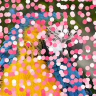

Stippen

Tekent een willekeurig maar gelijkmatig patroon van zachte stippen over de laag, of gebruikt de laag alleen als masker voor de stippen.
Instellingen
| Instelling | Type | Bereik | Standaard |
|---|---|---|---|
| Schaal | Getal | 0.01 tot 100 | 1 |
| Fase | Getal | -99 tot 99 | 0 |
| Straal | Getal | 0 tot 2 | 0.2 |
| Zachte rand | Getal | 0 tot 1 | 0.1 |
| Kleur 1 | Kleur | – | #FFFFFF |
| Kleur 2 | Kleur | – | #000000 |
| Dichtheid | Getal | 1 tot 13 | 12 |
| Verschuiving | Punt (X, Y) | -5000 px tot 5000 px | 0 px, 0 px |
| Vulling | Getal | 0% tot 100% | 100% |
| Alfa | Getal | 0% tot 100% | 100% |
| Overvloeimodus | Keuze | Normaal, Vermenigvuldigen, Bleken | Normaal |
| Seed | Getal | 0 tot 5 | 0 |
| Speling | Getal | 0% tot 100% | 100% |